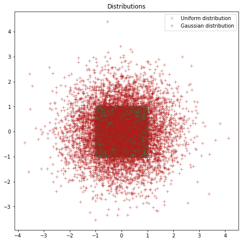
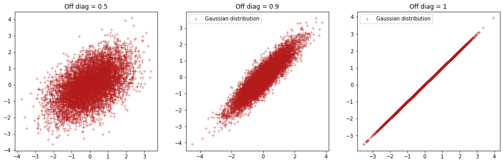

Covariance
Contents
Covariance#
Developed by Elias Anderssen Dalan ✉️, supported by Centre for Computing in Science Education and Hylleraas Centre for Quantum Molecular Sciences.
Things you might need before tackling this notebook:#
Even though you might be familiar to the concept of covariance and covariance matrices it might be difficult to grasp how this relates to modeling functions. You may be familiar with various types of distribution, such as uniform and gaussian distributions:
import numpy as np
import matplotlib.pyplot as plt
Np = 7500 #Number of points
plt.figure(figsize=(8, 8))
plt.title("Distributions")
x, y = np.random.uniform(-1, 1, (2, Np)) #Creating a uniform distribution in 2D
plt.plot(x, y, "x", label="Uniform distribution", color =(.1,.5,.3), alpha=0.4)
mean = np.array([0,0]) #Mean values for x and y of our gaussian distribution
covariance_matrix = np.eye(2) #Remember this matrix!
covariance_matrix[1,0] = 0
covariance_matrix[0,1] = 0
x,y = np.random.multivariate_normal(mean, covariance_matrix, Np).T #Creating a normal distribution in 2D
plt.plot(x, y, "+", label="Gaussian distribution", color = (.7,.1,.1), alpha=0.5)
plt.legend()
plt.show()

In cases where the distribution of variables: \begin{equation} P(x,y) = P(x)P(y) \end{equation} We say that the variables are independent, that is: The probability of measuring some x does not depend on what y has been measured (or if it has been measured or not), and vice versa.
You may have taken notice of the covariance-matrix above. When constructing a multivariate gaussian distribution, this matrix determines the interdependence between x and y.
Right now our covariance matrix looks like this: \begin{equation} cov = \begin{bmatrix} 1 & 0 \ 0 & 1 \end{bmatrix} \end{equation} What happens if we cange the off-diagonal elements?
mean = np.array([0,0]) #Mean values for x and y of our gaussian distribution
covariance_matrix = np.eye(2) #Off-diagnonal elements set to 0.5
covariance_matrix[1,0] = 0.5
covariance_matrix[0,1] = 0.5
x,y = np.random.multivariate_normal(mean, covariance_matrix, Np).T
plt.figure(figsize=(17, 5))
plt.subplot(1, 3, 1)
plt.title("Off diag = 0.5")
plt.plot(x, y, "+", label="Gaussian distribution", color = (.7,.1,.1), alpha=0.5)
covariance_matrix = np.eye(2) #Off diagonal elements set to 0.9
covariance_matrix[1,0] = 0.9
covariance_matrix[0,1] = 0.9
x,y = np.random.multivariate_normal(mean, covariance_matrix, Np).T
plt.subplot(1, 3, 2)
plt.title("Off diag = 0.9")
plt.plot(x, y, "+", label="Gaussian distribution", color = (.7,.1,.1), alpha=0.5)
plt.legend()
covariance_matrix = np.eye(2) #What will happen if all elements in our matrix equals to 1?
covariance_matrix[1,0] = 1
covariance_matrix[0,1] = 1
x,y = np.random.multivariate_normal(mean, covariance_matrix, Np).T
plt.subplot(1, 3, 3)
plt.title("Off diag = 1")
plt.plot(x, y, "+", label="Gaussian distribution", color = (.7,.1,.1), alpha=0.5)
plt.legend()
plt.show()

So the off-diagonal elements describe the covariance between xand y! In higher dimensions this can be generalized to a covariance matrix where the elemets describe covariance as shown down below. A general covariance matrix in n-dimensions will look like this:
\begin{equation} \text{Covariance matrix} = \begin{bmatrix} cov(x_1,x_1) & cov(x_1, x_2) & cov(x_1,x_3) & \dots & cov(x_1,x_n) \ cov(x_2,x_1) & cov(x_2, x_2) & cov(x_2,x_3) & \dots & cov(x_2,x_n)\ cov(x_3,x_1) & cov(x_3, x_2) & cov(x_3,x_3) & \dots & cov(x_3,x_n) \ \vdots & \vdots & \vdots & \ddots & \vdots \ cov(x_n,x_1) & cov(x_n, x_2) & cov(x_n,x_3) & \dots & cov(x_n,x_n) \end{bmatrix} \end{equation}
Now you have a grasp of what covariance is, and have seen some examples of where covariance is relevant!